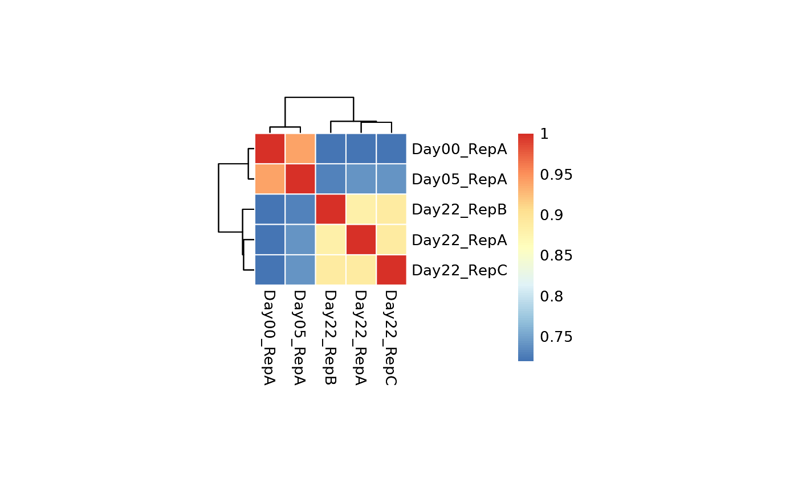

gimap performs analysis of dual-targeting CRISPR screening data, with the goal of aiding the identification of genetic interactions (e.g. cooperativity, synthetic lethality) in models of disease and other biological contexts. gimap analyzes functional genomic data generated by the pgPEN (paired guide RNAs for genetic interaction mapping) approach, quantifying growth effects of single and paired gene knockouts upon application of a CRISPR library. A multitude of CRISPR screen types can be used for this analysis, with helpful descriptions found in this review (https://www.nature.com/articles/s43586-021-00093-4). Use of pgPEN and GI-mapping in a paired gRNA format can be found here (https://pubmed.ncbi.nlm.nih.gov/34469736/).
library(dplyr)
#>
#> Attaching package: 'dplyr'
#> The following objects are masked from 'package:stats':
#>
#> filter, lag
#> The following objects are masked from 'package:base':
#>
#> intersect, setdiff, setequal, unionLet’s examine this example pgPEN counts table. It’s divided into columns containing:
id: an ID corresponding to the names of paired
guidesseq_1: gRNA sequence 1, targeting “paralog A”seq_2: gRNA sequence 2, targeting “paralog B”Day00_RepA: Gene Counts from Day 00 for Replicate
ADay05_RepA: Gene Counts from Day 05 for Replicate
ADay22_RepA: Gene Counts from Day 22 for Replicate
ADay22_RepB: Gene Counts from Day 22 for Replicate
B
example_data <- get_example_data("count")
#> Rows: 33170 Columns: 8
#> ── Column specification ────────────────────────────────────────────────────────
#> Delimiter: "\t"
#> chr (3): id, seq_1, seq_2
#> dbl (5): Day00_RepA, Day05_RepA, Day22_RepA, Day22_RepB, Day22_RepC
#>
#> ℹ Use `spec()` to retrieve the full column specification for this data.
#> ℹ Specify the column types or set `show_col_types = FALSE` to quiet this message.The metadata you have may vary slightly from this but you’ll want to make sure you have the essential variables and information regarding how you collected your data.
colnames(example_data)
#> [1] "id" "seq_1" "seq_2" "Day00_RepA" "Day05_RepA"
#> [6] "Day22_RepA" "Day22_RepB" "Day22_RepC"This count data has …
We also want the construct metadata
example_pg_metadata <- get_example_data("meta")
#> Rows: 33170 Columns: 9
#> ── Column specification ────────────────────────────────────────────────────────
#> Delimiter: ","
#> chr (9): pgRNA_ID, target1_sgRNA_seq, target2_sgRNA_seq, paralog_pair, targe...
#>
#> ℹ Use `spec()` to retrieve the full column specification for this data.
#> ℹ Specify the column types or set `show_col_types = FALSE` to quiet this message.
colnames(example_pg_metadata)
#> [1] "pgRNA_ID" "target1_sgRNA_seq" "target2_sgRNA_seq"
#> [4] "paralog_pair" "target_type" "target1"
#> [7] "target2" "target1_ensembl_id" "target2_ensembl_id"And the meta data has …
We’re going to set up three datasets. Two are required; the first is the counts that the genetic interaction analysis will be used for.
The first data set contains the read counts from each sample type. Required for analysis is a Day 0 (or plasmid) sample, and at least one further timepoint sample. The T0 sample, or plasmid sample, will represent the entire library before any type of selection has occurred during the length of the screen. This is the baseline for guide RNA representation. The length of time cells should remain in culture throughout the screen is heavily dependent on the type of selection occurring, helpful advice can be found in (https://www.nature.com/articles/s43586-021-00093-4). QC analysis will follow to correlate replicates if inputted. Comparison of early and late timepoints is possible in this function, but not required if early timepoints were not taken.
example_counts <- example_data %>%
select(c("Day00_RepA", "Day05_RepA", "Day22_RepA", "Day22_RepB", "Day22_RepC")) %>%
as.matrix()The next datasets are metadata that describe the dimensions of the count data. - These both need to be data frames. - The sizes of these metadata must correspond to the dimensions of the counts data.
pg_id are just the unique IDs listed in the same
order/sorted the same way as the count data and can be used for mapping
between the count data and the metadata.
One of these (example_pg_metadata) is required because
it is necessary to know the IDs and be able to map them to pgRNA
constructs.
Sample metadata is the information that describes the samples and is sorted the same way as the columns in the count data.
example_sample_metadata <- data.frame(
id = 1:5,
day = as.factor(c("Day00", "Day05", "Day22", "Day22", "Day22")),
rep = as.factor(c("RepA", "RepA", "RepA", "RepB", "RepC"))
)We’ll need to provide example_counts,
pg_ids and pg_metadata to
setup_data(). We can provide sample_metadata,
but it is not required at the moment.
Now let’s setup our data using setup_data(). Optionally
we can provide the metadata in this function as well so that it is
stored with the data.
gimap_dataset <- setup_data(counts = example_counts,
pg_ids = example_pg_id,
pg_metadata = example_pg_metadata,
sample_metadata = example_sample_metadata)You’ll notice that this set up gives us a list of formatted data.
This contains the original counts we gave setup_data()
function but also normalized counts, and the total counts per
sample.
raw_counts: The original counts data that illustrates
the number of cells alive in the sample. This data has samples as the
columns and the paired guide constructs as rows.counts_per_sample: Add up all the counts for each
sample over all of the paired guide designs.count_norm - For each sample, the data is normalized
-log10(( counts +1) / total counts for the sample over all the pg designs ))
cpm - For each sample this is calculated by taking the
counts / total counts for the sample over all the pg designs)*1e6
log2cpm: log-2 transformed counts per million this is
calculated by log2(cpms + 1)
sample_metadata: Metadata that describes the samples.
This likely includes the time point information, replicates, sample IDs,
and any other additional information that is needed regarding the
experimental setup.
str(gimap_dataset)
#> List of 8
#> $ raw_counts : num [1:33170, 1:5] 951 1511 191 588 289 ...
#> ..- attr(*, "dimnames")=List of 2
#> .. ..$ : NULL
#> .. ..$ : chr [1:5] "Day00_RepA" "Day05_RepA" "Day22_RepA" "Day22_RepB" ...
#> $ counts_per_sample: Named num [1:5] 38471205 32028290 29144511 36628141 36448291
#> ..- attr(*, "names")= chr [1:5] "Day00_RepA" "Day05_RepA" "Day22_RepA" "Day22_RepB" ...
#> $ transformed_data :List of 3
#> ..$ count_norm: num [1:33170, 1:5] 4.61 4.41 5.3 4.82 5.12 ...
#> .. ..- attr(*, "dimnames")=List of 2
#> .. .. ..$ : NULL
#> .. .. ..$ : chr [1:5] "Day00_RepA" "Day05_RepA" "Day22_RepA" "Day22_RepB" ...
#> ..$ cpm : num [1:33170, 1:5] 24.72 39.28 4.96 15.28 7.51 ...
#> .. ..- attr(*, "dimnames")=List of 2
#> .. .. ..$ : NULL
#> .. .. ..$ : chr [1:5] "Day00_RepA" "Day05_RepA" "Day22_RepA" "Day22_RepB" ...
#> ..$ log2_cpm : num [1:33170, 1:5] 4.68 5.33 2.58 4.03 3.09 ...
#> .. ..- attr(*, "dimnames")=List of 2
#> .. .. ..$ : NULL
#> .. .. ..$ : chr [1:5] "Day00_RepA" "Day05_RepA" "Day22_RepA" "Day22_RepB" ...
#> $ metadata :List of 3
#> ..$ pg_ids : tibble [33,170 × 1] (S3: tbl_df/tbl/data.frame)
#> .. ..$ id: chr [1:33170] "AADAC_AADACL2_pg1" "AADAC_AADACL2_pg10" "AADAC_AADACL2_pg11" "AADAC_AADACL2_pg12" ...
#> ..$ pg_metadata : NULL
#> ..$ sample_metadata:'data.frame': 5 obs. of 3 variables:
#> .. ..$ id : int [1:5] 1 2 3 4 5
#> .. ..$ day: Factor w/ 3 levels "Day00","Day05",..: 1 2 3 3 3
#> .. ..$ rep: Factor w/ 3 levels "RepA","RepB",..: 1 1 1 2 3
#> $ filtered_data : NULL
#> $ annotation : NULL
#> $ log_fc : NULL
#> $ results : NULL
#> - attr(*, "class")= chr [1:2] "list" "gimap_dataset"The first step is running some quality checks on our data. The
run_qc() function will create a report we can look at to
assess this.
The report includes several visualizations of raw/unfiltered data:
log2cpm values for each individual sample:
this helps users identify samples that do not have a normal distribution
of reads and inform the upcoming filtering steps.This report also includes several visualizations after filters are applied:
There is a filter that flags pgRNA constructs where any of the time points have a count of zero. - We include a bar plot that shows the number of pgRNA constructs which have counts of zero in either 0, 1, 2, or 3 replicates. - We include a table that specifies how many pgRNAs would be filtered out by applying this filter.
There is a filter that flags pgRNA constructs that have low log2 CPM counts for the day 0 or plasmid time point. - The histogram of the log2 CPM values of pgRNA constructs at the plasmid time point mentioned earlier does have a dashed line specifying the lower outlier (or a user defined cutoff) and pgRNA constructs with a plasmid log2 CPM lower than that value can be filtered out. - We include a table that specifies how many pgRNAs would be filtered out by applying this filter.
run_qc(gimap_dataset,
output_file = "example_qc_report.Rmd",
overwrite = TRUE,
quiet = TRUE)
#> Results in: example_qc_report.html
sessionInfo()
#> R version 4.4.1 (2024-06-14)
#> Platform: x86_64-pc-linux-gnu
#> Running under: Ubuntu 22.04.4 LTS
#>
#> Matrix products: default
#> BLAS: /usr/lib/x86_64-linux-gnu/openblas-pthread/libblas.so.3
#> LAPACK: /usr/lib/x86_64-linux-gnu/openblas-pthread/libopenblasp-r0.3.20.so; LAPACK version 3.10.0
#>
#> locale:
#> [1] LC_CTYPE=C.UTF-8 LC_NUMERIC=C LC_TIME=C.UTF-8
#> [4] LC_COLLATE=C.UTF-8 LC_MONETARY=C.UTF-8 LC_MESSAGES=C.UTF-8
#> [7] LC_PAPER=C.UTF-8 LC_NAME=C LC_ADDRESS=C
#> [10] LC_TELEPHONE=C LC_MEASUREMENT=C.UTF-8 LC_IDENTIFICATION=C
#>
#> time zone: UTC
#> tzcode source: system (glibc)
#>
#> attached base packages:
#> [1] stats graphics grDevices utils datasets methods base
#>
#> other attached packages:
#> [1] ggplot2_3.5.1 dplyr_1.1.4 gimap_0.1.0
#>
#> loaded via a namespace (and not attached):
#> [1] tidyr_1.3.1 sass_0.4.9 utf8_1.2.4 generics_0.1.3
#> [5] xml2_1.3.6 stringi_1.8.4 hms_1.1.3 digest_0.6.36
#> [9] magrittr_2.0.3 RColorBrewer_1.1-3 evaluate_0.24.0 grid_4.4.1
#> [13] timechange_0.3.0 fastmap_1.2.0 jsonlite_1.8.8 purrr_1.0.2
#> [17] fansi_1.0.6 viridisLite_0.4.2 scales_1.3.0 textshaping_0.4.0
#> [21] jquerylib_0.1.4 cli_3.6.3 crayon_1.5.3 rlang_1.1.4
#> [25] bit64_4.0.5 munsell_0.5.1 withr_3.0.0 cachem_1.1.0
#> [29] yaml_2.3.8 parallel_4.4.1 tools_4.4.1 tzdb_0.4.0
#> [33] memoise_2.0.1 colorspace_2.1-0 kableExtra_1.4.0 vctrs_0.6.5
#> [37] R6_2.5.1 lifecycle_1.0.4 lubridate_1.9.3 snakecase_0.11.1
#> [41] stringr_1.5.1 bit_4.0.5 fs_1.6.4 vroom_1.6.5
#> [45] ragg_1.3.2 janitor_2.2.0 pkgconfig_2.0.3 desc_1.4.3
#> [49] pkgdown_2.0.9 pillar_1.9.0 bslib_0.7.0 gtable_0.3.5
#> [53] glue_1.7.0 systemfonts_1.1.0 highr_0.11 xfun_0.45
#> [57] tibble_3.2.1 tidyselect_1.2.1 rstudioapi_0.16.0 knitr_1.47
#> [61] farver_2.1.2 htmltools_0.5.8.1 labeling_0.4.3 rmarkdown_2.27
#> [65] svglite_2.1.3 readr_2.1.5 pheatmap_1.0.12 compiler_4.4.1